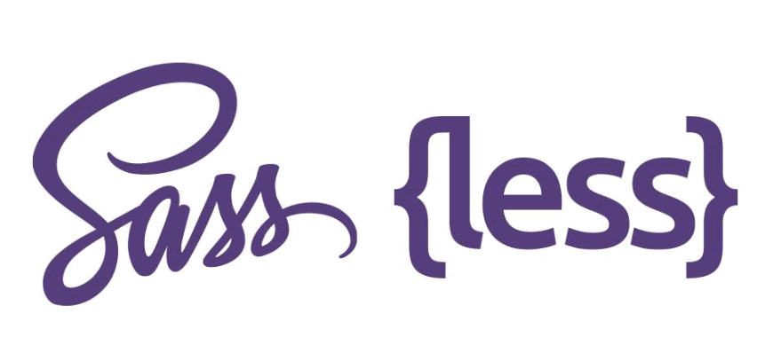

【前端知识体系-CSS相关】CSS预处理器原文出处:本文由博客园博主Web前端社区提供。
原文连接:https://www.cnblogs.com/fecommunity/p/11893384.html

1.常见的CSS预处理器有哪些？
[!NOTE]
css预处理器：用一种专门的编程语言，为CSS增加了一些编程的特性，将CSS作为目标生成文件，然后开发者就只要使用这种语言进行编码工作，可以让你的CSS更加简洁、适应性更强、可读性更佳，更易于代码的维护等诸多好处
- Sass(Scss)：2007,ruby编写
- Less: 2009，js编译
1.1 使用流程？
- 基于CSS的另外一种语言
- 通过工具编译成CSS
- 添加了很多CSS不具备的特性
- 同时CSS文件的组织方式
1.2 预处理器的作用有哪些？
- 帮助开发者更好组织CSS代码（变量，mixIn）
- 提高代码的复用性
- 代码的可维护性增强
2.Less/Sass预处理器的功能？
- 嵌套： 反映层级和约束
- 变量和计算： 减少重复代码
- Extend和mixIn： 代码片段的抽离
- 循环: 适用于复杂有规律的样式
- import：可以实现CSS文件的模块化
3.CSS预处理器的优缺点？
- 优点： 提高代码的复用率和可维护性
- 缺点： 引入了编译的过程，有一定的学习成本
前端工程化：预处理不再是唯一的手段了，可以使用工程化构建工具进行处理
4.scss和less的区别？
- 编译环境不一样
- 变量符不一样，Less是@，而Scss是$，而且变量的作用域也不一样。
- 输出设置，Less没有输出设置，Sass提供4种输出选项：
- Sass支持条件语句，可以使用if{}else{},for{}循环等等。而Less不支持。
- 引用外部CSS文件
- 工具库不同